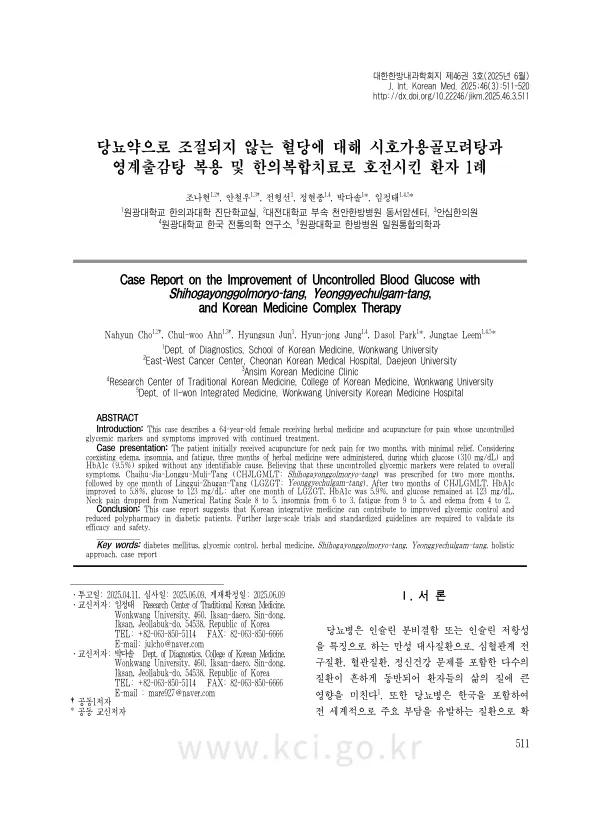

Case Report on the Improvement of Uncontrolled Blood Glucose with Shihogayonggolmoryo-tang, Yeonggyechulgam-tang, and Korean Medicine Complex Therapy
Cho N, Ahn Cw, Jun H, Jung Hj, Park D, Leem J
The Journal of Internal Korean Medicine 46(3):511-520

첫 장 · 오픈액세스First page · open access
논문 소개Summary
당뇨병은 인슐린 분비 결함이나 인슐린 저항성으로 생기는 만성 대사질환이고, 심혈관질환과 혈관질환, 정신건강 문제까지 함께 오는 일이 흔해 삶의 질에 크게 영향을 줍니다. 이 증례는 통증으로 한의 치료를 받던 환자에게서 혈당이 갑자기 나빠진 것을 발견하고, 그 혈당을 따로 떼어 보지 않고 전체 증상의 한 갈래로 다룬 기록입니다.
64세 여성이 목 통증으로 두 달 동안 침 치료를 받았으나 나아지는 정도가 크지 않았습니다. 부종과 불면, 피로를 함께 호소해 한약을 석 달 투여했는데 그 사이 뚜렷한 원인 없이 혈당이 310 mg/dL, 당화혈색소가 9.5%까지 치솟았습니다. 연구팀은 이 조절되지 않는 혈당 지표가 환자의 전반적인 증상과 이어져 있다고 보고 시호가용골모려탕을 두 달 더 처방했고, 이어 영계출감탕을 한 달 썼습니다.
시호가용골모려탕 두 달 뒤 당화혈색소가 5.8%, 혈당이 123 mg/dL로 내려갔습니다. 영계출감탕 한 달 뒤에는 당화혈색소 5.9%, 혈당 123 mg/dL로 유지되었습니다. 다른 증상도 함께 움직였습니다. 목 통증은 숫자평가척도 8점에서 5점으로, 불면은 6점에서 3점으로, 피로는 9점에서 5점으로, 부종은 4점에서 2점으로 내려갔습니다.
이 기록에서 눈여겨볼 것은 처방을 바꾼 근거입니다. 혈당만 보고 혈당을 겨냥한 약을 쓴 것이 아니라, 부종과 불면과 피로가 한 묶음으로 움직인다고 보고 그 묶음에 맞는 처방을 골랐습니다. 결과적으로 혈당이 따라 내려왔습니다.
한계는 증례 하나라는 점입니다. 식이와 운동, 생활습관의 변화를 통제하지 못했으므로 처방만의 몫을 가릴 수 없습니다. 저자들은 이 결과를 한의 통합치료가 혈당 조절과 다제 복용 감소에 기여할 가능성으로만 두고, 효과와 안전성을 확인하려면 대규모 시험과 표준화된 지침이 필요하다고 적었습니다.
Diabetes is a chronic metabolic disease of impaired insulin secretion or insulin resistance, and it commonly arrives with cardiovascular disease, vascular complications and mental health problems, bearing heavily on quality of life. This case records a patient already receiving Korean medicine for pain whose glucose control deteriorated sharply — and whose glucose was then treated not in isolation but as one strand of the whole picture.
A 64-year-old woman received acupuncture for neck pain for two months with minimal relief. Given coexisting oedema, insomnia and fatigue, herbal medicine was administered over three months, during which glucose spiked to 310 mg/dL and HbA1c to 9.5% with no identifiable cause. Reading these uncontrolled markers as connected to the patient's overall symptoms, the team prescribed Chaihu-Jia-Longgu-Muli-Tang for a further two months, followed by one month of Linggui-Zhugan-Tang.
After two months on the first prescription HbA1c had improved to 5.8% and glucose to 123 mg/dL; after one month on the second, HbA1c was 5.9% and glucose held at 123 mg/dL. The other symptoms moved with them: neck pain fell from 8 to 5 on the numerical rating scale, insomnia from 6 to 3, fatigue from 9 to 5 and oedema from 4 to 2.
What is worth noting is the reasoning behind the change of prescription. Rather than looking at the glucose and reaching for something aimed at glucose, the team read oedema, insomnia and fatigue as moving together and chose a prescription fitted to that pattern. The glucose followed.
The limitation is that this is one case. Changes in diet, exercise and lifestyle were not controlled, so the contribution of the prescription alone cannot be isolated. The authors leave the finding as a possibility that Korean integrative medicine may contribute to glycaemic control and reduced polypharmacy, and note that large-scale trials and standardised guidelines are needed to establish efficacy and safety.
인용Cite
Cho N, Ahn Cw, Jun H, Jung Hj, Park D, Leem J. Case Report on the Improvement of Uncontrolled Blood Glucose with Shihogayonggolmoryo-tang, Yeonggyechulgam-tang, and Korean Medicine Complex Therapy. The Journal of Internal Korean Medicine. 2025;46(3):511-520. doi:10.22246/jikm.2025.46.3.511